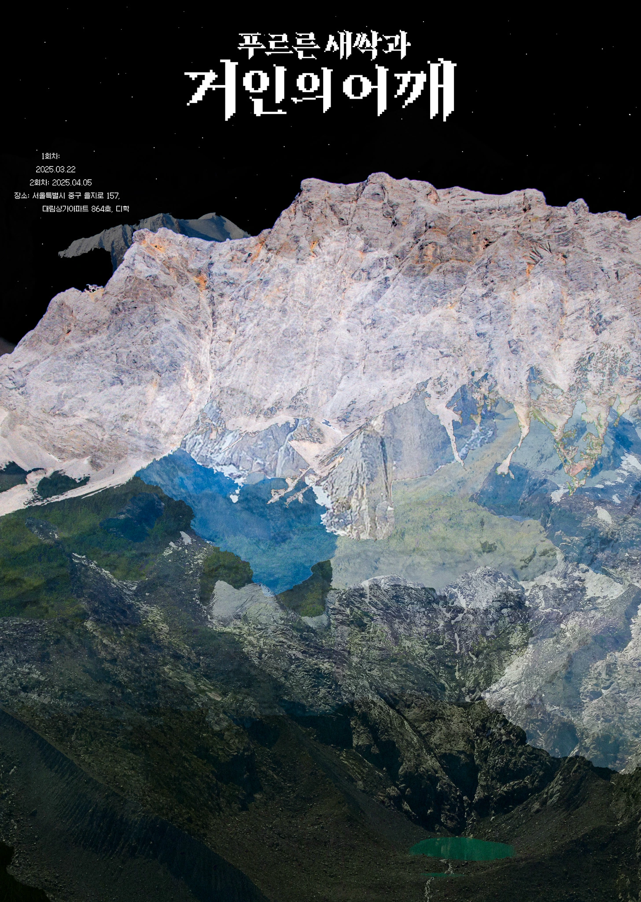
푸르른 새싹과 거인의 어깨
INDEPENDENT STUDY • 2025
1차시 : 2025.03.22 오후 7시 - 9시
내용 : 역사 속에 있는 그래픽 디자이너들을 선정해 마음에 드는 작업물 찾기
2차시 : 2025.04.05 오후 7시 - 9시
내용 : 선정한 포스터를 최대한 따라 만들기
포스터 디자인 : 성냥그래픽스
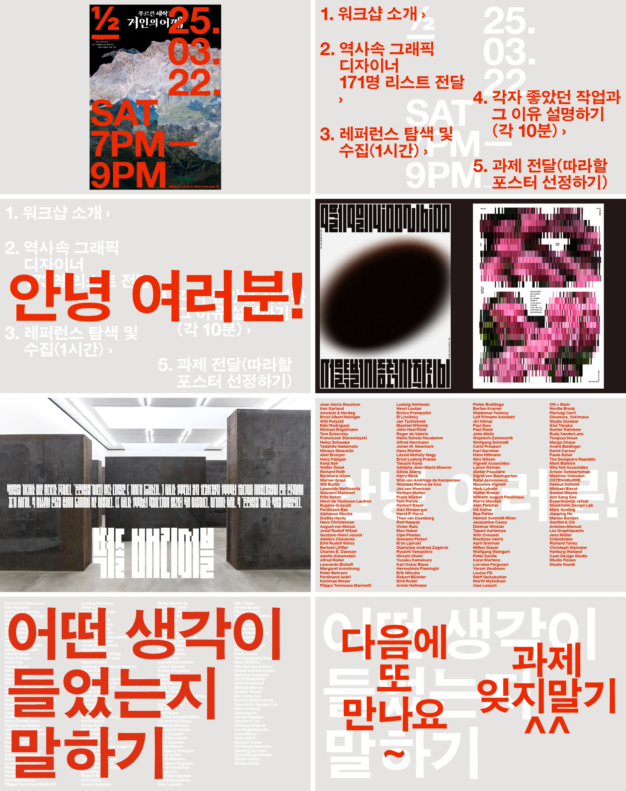
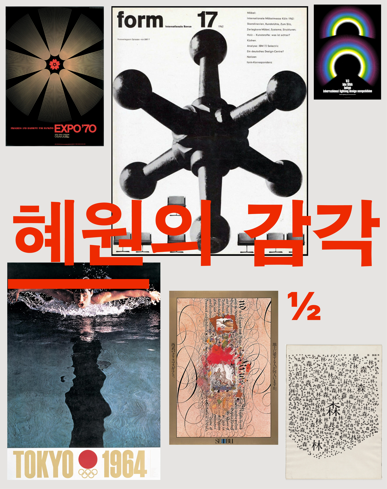
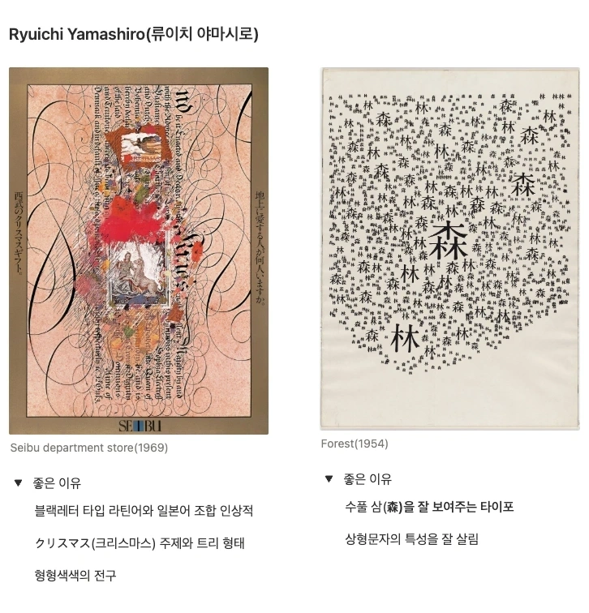
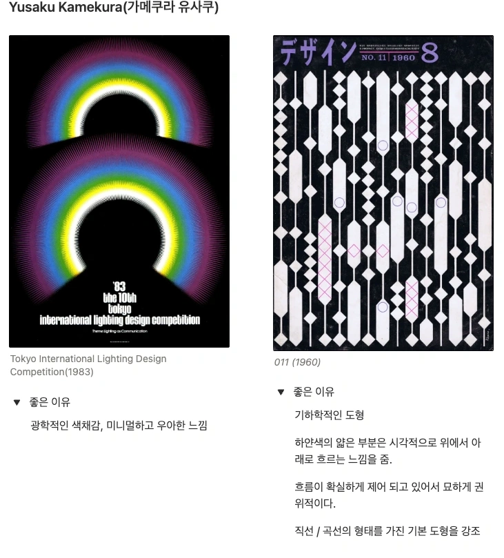
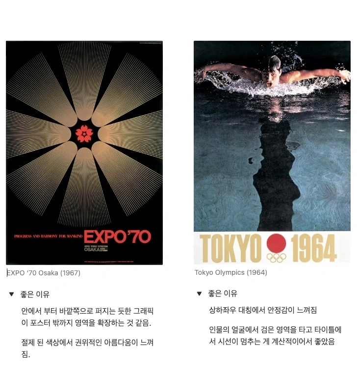
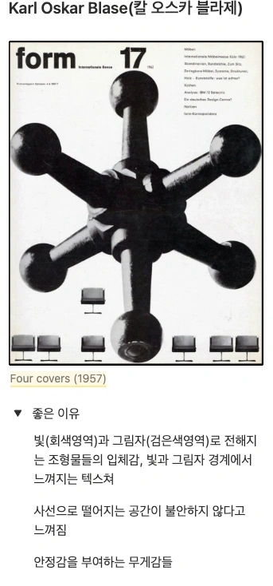
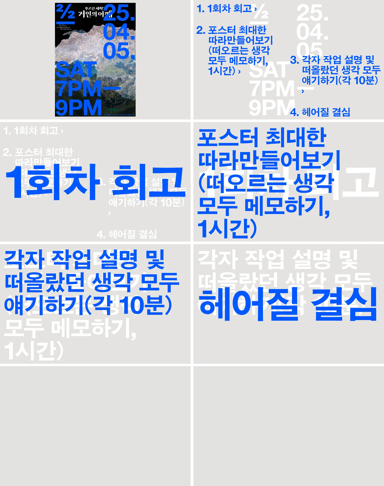
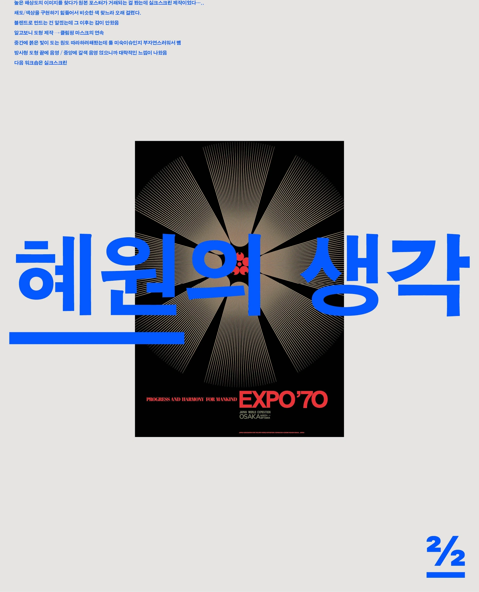
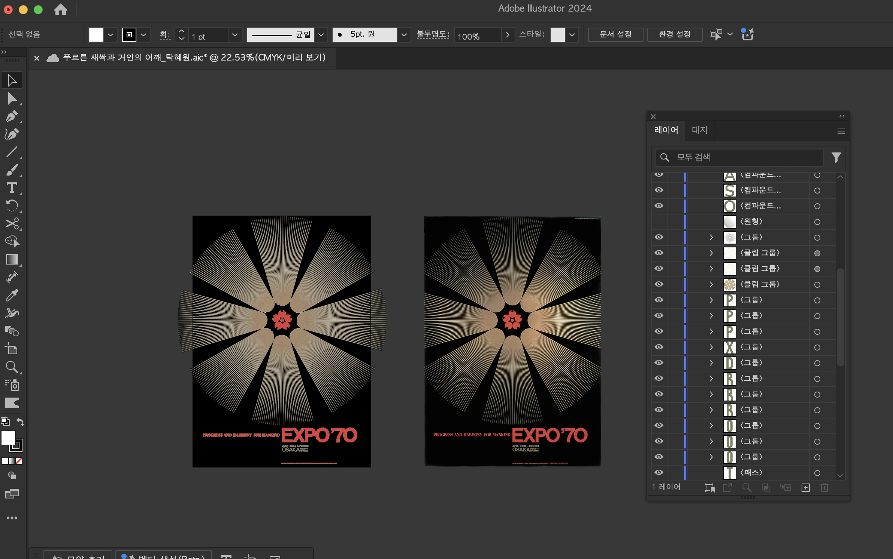
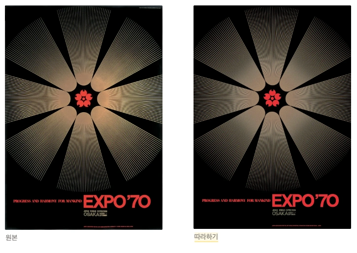
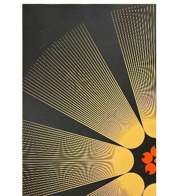
- 높은 해상도의 이미지를 찾다가 원본 포스터가 거래되는 걸 봤는데 실크스크린 제작이었다.(이미지마다 색상이 다른 이유)
- 채도/색상을 구현하기 힘들어서 비슷한 색 찾느라 조금 오래 걸렸다.
- 블렌드로 만드는 건 알겠는데 그 이후는 감이 안왔음.
- 도형 제작 → 클리핑 마스크의 연속
- 중간에 붉은 빛이 도는 원도 따라하려해봤는데 경계선이 너무 잘보여서 효과가 부자연스러워서 뺌
- 방사형 도형 끝에 음영 / 중앙에 갈색 음영 얹으니까 대략적인 느낌이 나왔음
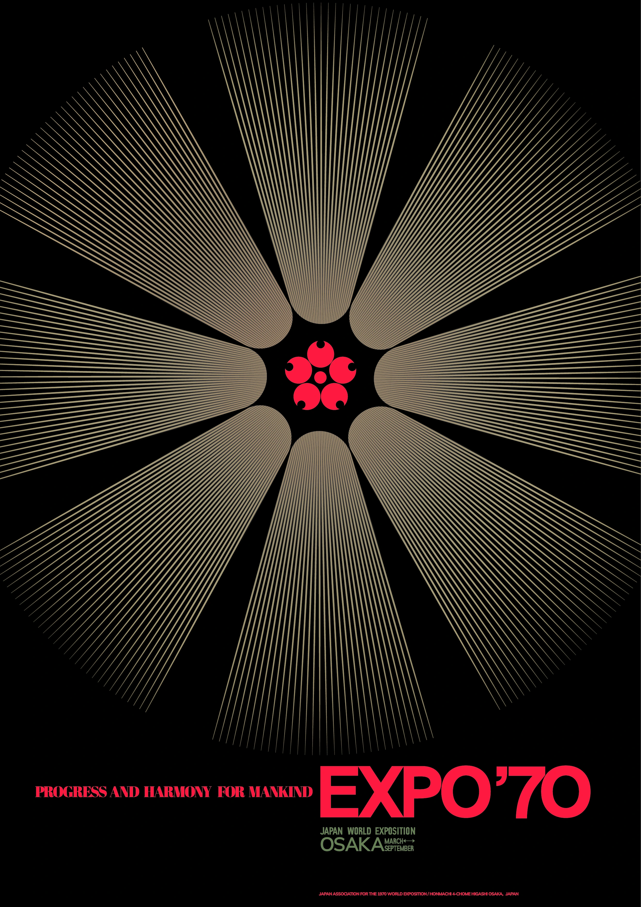